「手記の加筆」完全攻略
荘園の奥深くにある秘密の書斎に眠る、ミステリー作家「オルフェウス」の改変小説。詞章を集めて書斎へ提出し、巧妙に隠された「真相」を解き明かして物語から脱出する、探索型の新モードです。ここでは遊び方から職業・マップ・詞章システム・シーズンS0のコレクションまでまとめて解説します。
背景ストーリー
遊び方の流れ
ソロまたはチームでオルフェウスの小説世界を探索し、制限時間内に詞章を集めて書斎へ提出し、脱出を目指します。流れは大きく4段階です。
失敗するとどうなる？
使用できる職業
サバイバーモードで使える職業は次の3種です。なおハンターモードも実装済みで、詳しくは後半の「ハンターモード」セクションで解説しています。


プレイアブルマップ「災いの女」
初のプレイアブルマップ【災いの女】が実装。シーズン0のテーマもこの「災いの女」です。現在開放されている難易度は次の通り。
悪夢難易度 ＆ ボス「災いの女」実装

【災いの女】に最高難易度悪夢が実装。最深部には見たことのない異象が徘徊し、新たな地下室や特殊部屋【災いの女-エンディング】エリアも開放。ついにボス「災いの女」との対決が楽しめます。※現在はサバイバーモードのみ。
悪夢の新異象
第一弾はいずれも悪夢難易度のみに出現（当面ほかの難易度には出ません）。
| 画像 | 異象 | 特徴・攻略のヒント |
|---|---|---|
| 拾遺の人形 | 音もなく現れ、大きなバッグでコレクションを待つ。優しく接するのが吉。価値の高いアイテムを渡すと、より良い転送先を狙える。 | |
|
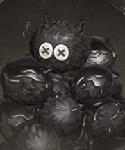 |
読者の憶測 | 物語が読まれた時に生まれた残像で、認められることを渇望する。近づいてきたら少なくとも一度は演目を見届けよう。自ら退場するタイミングを心得ている。 |
|
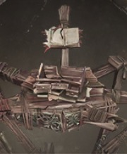 |
傾いた本棚 | よろめきながらさまよう残片。躯体を攻撃しても効きにくいので、開かれた本を直接狙うのが正解。 |
|
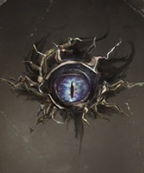 |
読者の審査 | 物語の上方に浮かび冷たい眼で検分し、不合理なものを修正してくる。瞳孔が収縮する瞬間を見極め、そのタイミングで完全に静止して見つからないように。 |
|
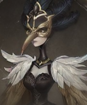 |
災いの女（ボス） | このモードのボス。七歳前は荘園の小さな主で、両親の「ナイチンゲール」だった少女。容易な相手ではないので、建物を使ってタイミングよく身を隠す／誘導するのが鍵。対抗しきれなければ引き返すのも立派な選択。 |
叙事手法（新要素）
各探索の開始時に低確率でランダムに1種発動する特殊ルール。対応する物語に入ると参加者全員に種類が通知され、効果はその探索中ずっと有効です。当たりを引くと一気に稼ぎやすくなります。※一部の叙事手法は全難易度では開放されません。


盗墓筆記コラボ（期間限定）開催中
コラボ期間中は【災いの女】に専用の異象・詞章・叙事手法が登場します。とくにUR詞章「鬼璽」は陰兵を従えられる目玉アイテム。期間限定なので、狙うなら早めに動きましょう。
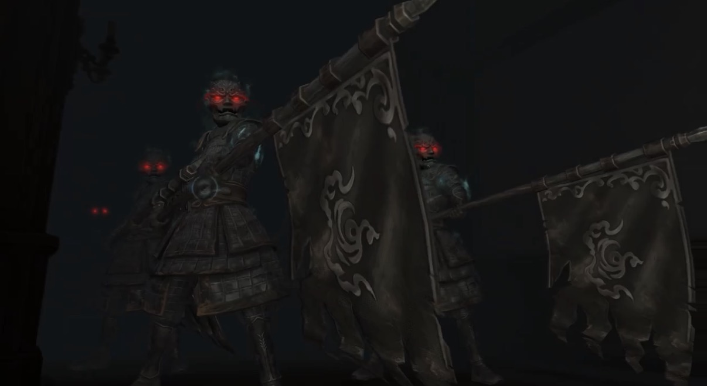
コラボ限定の異象
普通・困難の【災いの女】に出現します（他の異象の出現枠を置き換え）。
| 画像 | 異象 | 特徴・立ち回り |
|---|---|---|
|
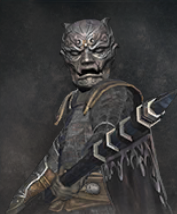 |
旗持ちの陰兵 | 静止している相手は察知できないが、動く相手には非常に敏感。見つかりそうな時は止まってやり過ごすのが有効。角笛の陰兵に鼓舞されると、より強力な技を使ってくる。 |
|
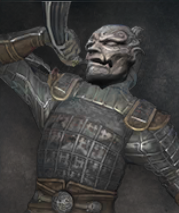 |
角笛の陰兵 | 広範囲の移動中の相手・物音を立てた相手を感知。見つかると角笛を吹き、周囲の異象すべてをその場所へ呼び寄せて巡回させる。こいつに気づかれると一気に危険度が上がるので、静かに動くのが最優先。 |
コラボ限定の詞章
初心者〜困難のすべての【災いの女】に登場します。


コラボ限定の叙事手法「陰兵借道」
ハンターモード実装
ついにハンターモードが実装。ハンター側で物語に潜り、配役サバイバー（身代わり人格）と詞章を奪い合う新モードです。職業選択は不要で、キャラのスキルを装備して戦います。現在の難易度は普通・困難、ソロと2人チームに対応。
基礎ルール
- ハンターは基礎能力が強化され、体力と移動速度が高め。骨董棚の数が増え、高価値詞章の出現率も上がる。
- ハンターは自分の武器を最初から携帯（下部アイテム欄に格納）。他アイテムと位置は入れ替えられるが、武器そのものは外せない。
- キャラ間の強さを揃えるため、一部ハンターの通常・溜め攻撃の発生前アクションや攻撃距離、硬直時間などを調整。
- 武器以外のアイテムは購入・使用可能。「呪われたサファイア」「鬼璽」などの特殊詞章の能力も通常どおり使える。
- 「手記の加筆」のイベントタスクもこのモードで進行できる。独立した操作カスタマイズ設定あり。
配役サバイバー（身代わり人格）
- 恐怖の一撃：骨董棚を開けている/木の板を乗り越えている配役サバイバーに攻撃を当てると発動し、追加ダメージ。
- 所持詞章の品質に応じて残像エフェクトの色が変化し、高品質ほど残像が長く残る＝良い詞章を持ってる相手が一目で分かる。
- 骨董棚を開けている最中は位置が露出し、開け終わると特殊な足跡が残る（追跡の手がかりに）。
スキル（職業選択なし）
職業は選ばず、キャラのスキルを装備して使います。第一弾で解放された「アンデッド」のスキルは以下の通り。

パッシブ①：負荷による影響を受けにくい。
パッシブ②：異象を倒すたびに健康値を回復。
補助スキル（ハンターモード専用）
対戦に持ち込む補助スキルを1つ追加で選べます。現在は3種類。


参加方法
新詞章【別紙】
価値：墨痕×10000 ／ 重さ：7kg ／ 対戦中は1スロットに2個までストック可、倉庫上限999個。サバイバーモードで入手できます（＝サバイバーで別紙を貯めてハンターで使う流れ）。
第一弾で使用可能なハンター（14人）
シーズンタスクと限定ペット
詞章システム（報酬の流れ）
集めた詞章は、鑑定・売却・洗練・図鑑など、さまざまな形で報酬につながります。
暗喩集録（新コレクション要素）NEW
- 異象暗喩：各異象を撃破・遭遇すると解放され、専用の背景ストーリーが読める。
- 詞章暗喩：特定の詞章を集めることで解放される記録。
- 物語暗喩：物語の進行・分岐に応じて解放される。
シーズン0（S0）情報
シーズン集計ルール
各シーズン終了時には、以下の集計が行われます。
| 項目 | 内容 |
|---|---|
| 段位リセット | 新シーズン開始時にシーズン段位がリセット。すべての訪問客がリセット後の段位からスタートします。 |
| ランキングリセット | 段位ランキングおよび詞章価値ランキングがリセット。過去シーズンの段位記録は保存されます。 |
| 新シーズンタスク | 新たな目標・ボーナス・チャレンジを含むシーズンタスクが開放されます。 |
| コレクションショップ更新 | 新シーズン関連アイテムが追加。前シーズンのコレクションも引き続き交換可能です。 |
| シーズンペット消失 | 獲得したシーズンペットは次シーズンへ持ち越されず、終了時に消失。次シーズンでも改めて獲得できます。 |
S0 コレクション一覧
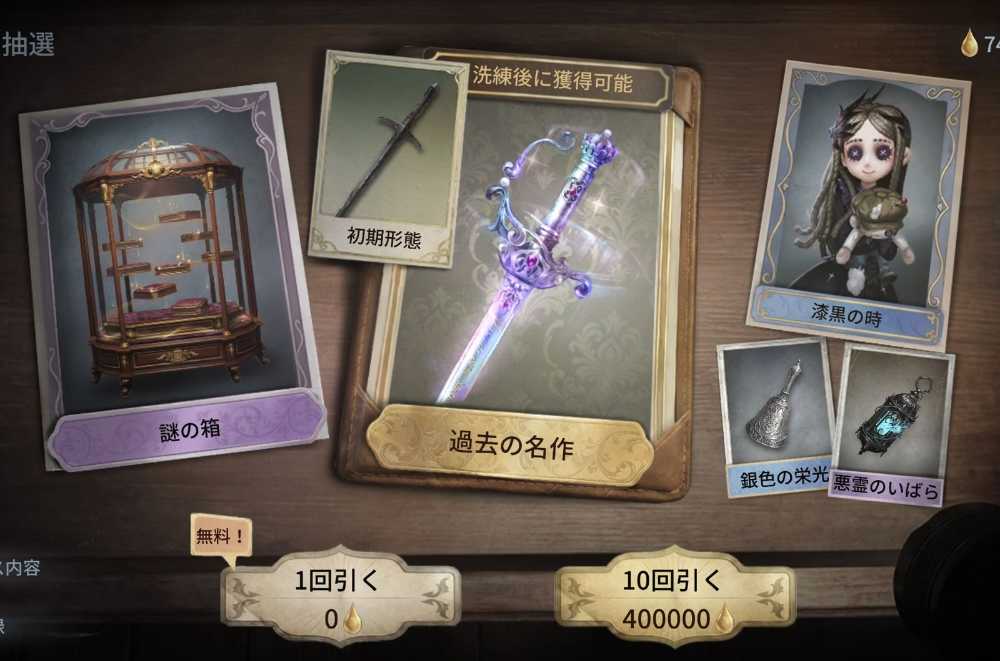
シーズン0の【コレクションショップ】に特別登場するラインナップです。
| 種類 | 名称 |
|---|---|
| 洗練可能な武器スキン | 庇護者の杖【過去の名作】 |
| アイテムスキン | ランタン【悪霊のいばら】 |
| アイテムスキン | 祝祷の鈴【銀色の栄光】 |
| SR衣装 | 「少女」【漆黒の時】 |
| 居館家具 | 【謎の箱】 |
| 居館家具 | 【無名のぬいぐるみ】 |
| 居館家具 | 銅鋳鴉・展翅 |
| 居館家具 | 銅鋳鴉・静栖 |
※ SR衣装「少女」【漆黒の時】は、次シーズン開始後にゲーム内ショップで交換可能になります。
【へむへむ流】最初に買うべきおすすめアイテム
序盤は墨痕（ぼっこん）が貴重。まずは「安くて腐らない」ものから揃えるのが鉄板。僕が最初に買うならこの4つです。


【中級者向け】買っておきたいアイテム
モードに慣れてきたら、周回効率と生存力を一段引き上げるこの5つ。ランタンは虚言の眼へ“卒業”するのがおすすめです。


武器・アイテムの装備（変更）方法
買った武器やアイテムをどう装備（変更）するのか分かりにくいですが、やり方はシンプルです👇
- バッグ（持ち物）を開く
- 装備したいものを、画面下の「4つの装備スロット」にドラッグして移す
おすすめサバイバー職業
目的別で選ぶのがコツ。「詞章を効率よく集めたい」のか「とにかく生き残りたい」のかで変わります。
敵（異象）別の立ち回り
近距離は「忘れられた信仰の必殺カウンター」が安定でコスパも良し。遠距離で攻めたいならもっと火力の出る武器もあるけど墨痕が高め。敵ごとのクセを覚えておくと無傷で抜けやすいです。
| 画像 | 異象 | 立ち回り |
|---|---|---|
|
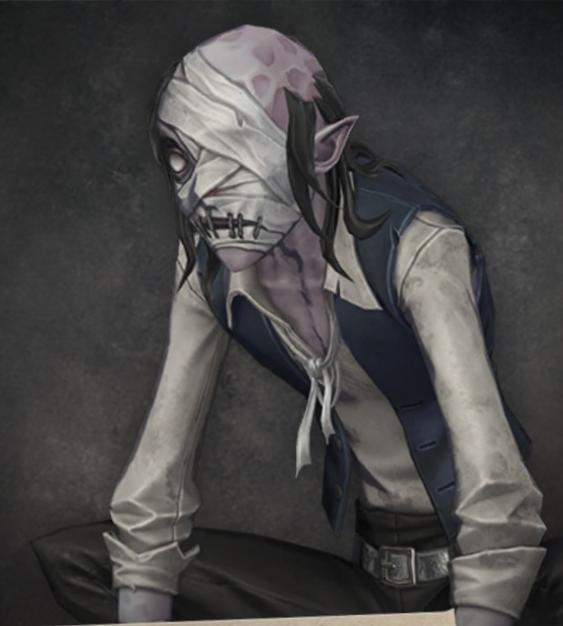 |
不器用な盗賊 | 木の板で殴ってくるが弱い。引きながら攻撃（引き撃ち）すれば、こちらは一切被弾せず倒せる。 |
|
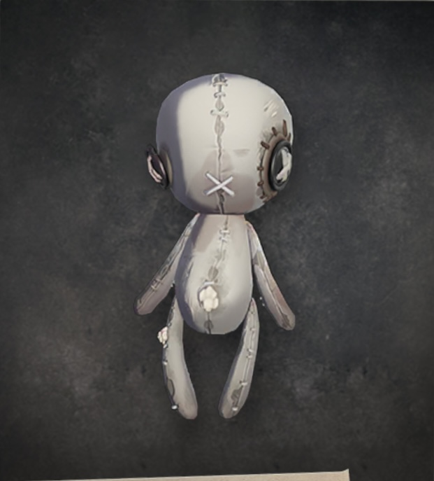 |
無名のぬいぐるみ | 定期的になだめれば無害。ただ付きまといがウザいので、邪魔ならあえて変身させて距離を取って逃げるのもアリ。 |
|
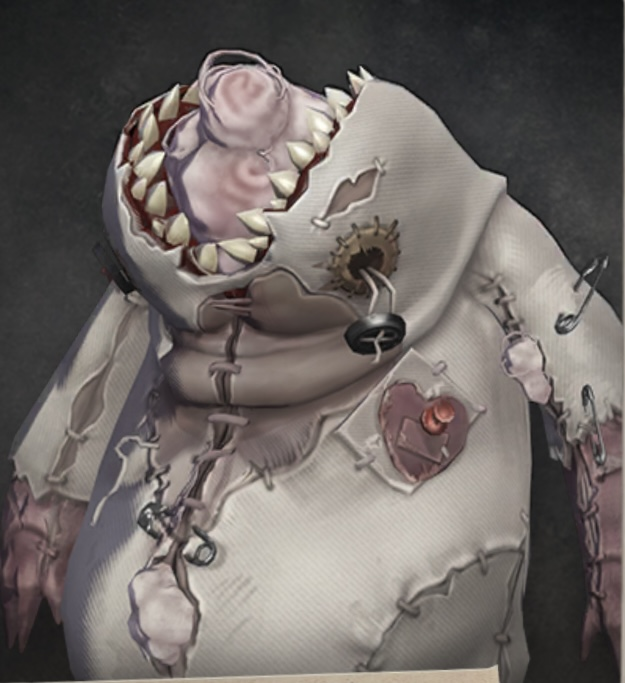 |
災厄の代わり身 | 攻撃力高め＆体力そこそこ＆吹き飛ばし持ちで厄介。だが変身硬直中に3回攻撃が入るので、忘れられた信仰なら必殺カウンターで簡単に処理可能。遠距離武器なら近接で削ってから距離を取って撃つ。※変身硬直の序盤は当たり判定が無いので空振り注意。 |
| 吐息の玉 | 憑依でダメージ、複数憑くとコントロール効果。死亡直前の自爆ダメージに要注意。無傷で抜けるのは難しめなので、被弾中は特に慎重に。 | |
|
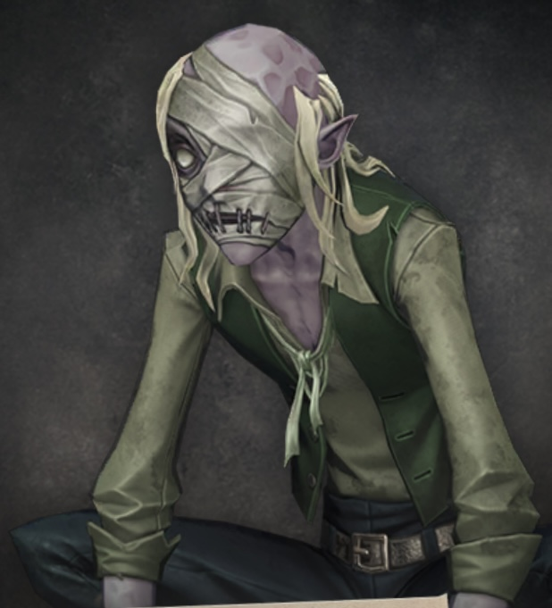 |
強欲な盗賊 | ジャンプで前方広範囲を攻撃。攻撃には距離が必要なので、思い切り密着するとバックステップを踏み続けて撃ってこない。詰める or 角に追い込むのが有効。攻撃発生時は前進して背後に回れば回避できる。 |
|
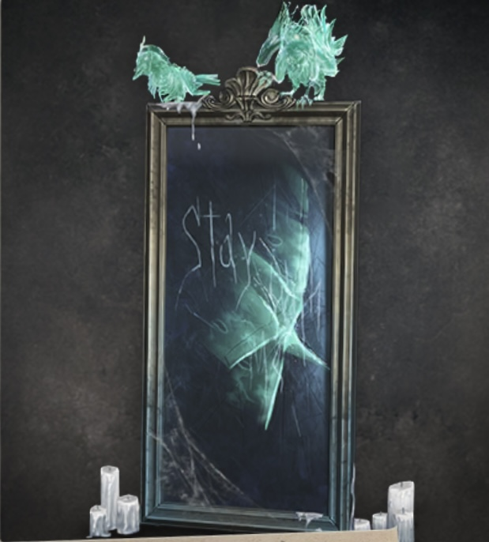 |
鏡の中の記憶 | 鏡から渡鴉が無限に湧く。鏡の前に立つと「割る」アクションが出るので、鏡そのものを割って湧きを止めよう。 |
| 沈黙の紳士 | 変身前はアイテムを1つ交換できる（大きな物音はNG）。変身後は攻撃が速く強力なので、硬直中に削ってから忘れられた信仰の必殺カウンター。遠距離武器なら近接後に距離を取って撃つ。 | |
|
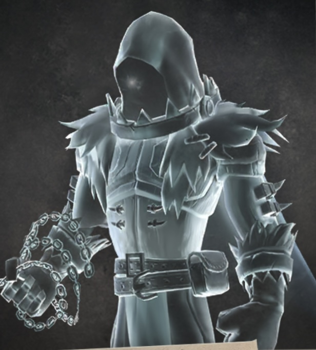 |
怠慢な守衛 | 唯一の遠距離持ちで一番面倒。壁をすり抜けて攻撃＆攻撃不能化までしてくる。遠距離攻撃は鹿のチェーンクロウみたいに当たると引き寄せられるが、この引き寄せはしゃがむ（クラウチ）ことで回避できるので、これをうまく使おう。基本は食らわないこと最優先。 |
|
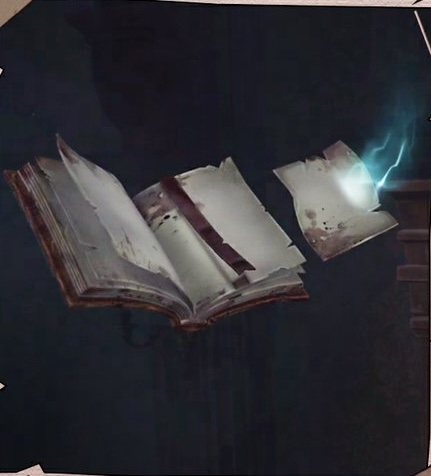 |
故紙の山NEW | 倒す相手ではなく、道案内役。簡単・普通・困難の【災いの女】に出現し、隠された詞章のもとへプレイヤーを導いてくれる。逆らわず、素直について行くのが賢明。 |
立ち回りの大原則
武器一覧（詳細）
墨痕で購入できる武器4種の性能とへむへむのコメント。近接メインなら「忘れられた信仰」、サブや状況用に他を組み合わせるのが基本です。

溜め：大きく振りかぶって振る
スキル：前方に回転する杖を設置。触れた敵にダメージ＋移動速度・方向転換速度を低下
🎲 初期武器。基本は忘れられた信仰の方が使い勝手◎。強いて使うならスキルを鏡の中の記憶・強欲な盗賊・災厄の代わり身の足止めに。強敵は広い場所だとジャンプや瞬間移動で回避してくるので、ドアの間に置くなど工夫が必要。
溜め：スタミナを消費し、溜めた長さに応じた距離に突撃攻撃
スキル：3秒間カウンター待機。受けるとダメージ無効＋反撃＋スタミナ全回復
🎲 序盤から終盤までずっと使える主力武器。カウンターが強力で2個持ちする価値あり。慣れれば怠慢な守衛も完封可能。距離を詰める溜め攻撃も便利で汎用性が高い。裏技：高所落下時、着地する瞬間にスキルを構えると落下ダメージを防げる（落下中は使えないので落ち始める前に）。

スキル：強力な炎を発射し、即座に最大まで継続ダメージ
🎲 効く敵・効かない敵がはっきり。動きの鈍い敵ならどの武器より安全に倒せるが、機敏な敵は倒し切る前に被弾するので苦手。壺を破壊できないデメリットもあるので、サブ武器向き。

スキル：弾を即座にリロード
🎲 遠距離から攻められるのが強み。ただし高価なので、コスパ重視なら近接優先でOK。
アイテム一覧（詳細）
探索を支える消耗・補助アイテム。序盤は安いものから、慣れたら上位互換へ乗り換えていきましょう。
| 画像 | アイテム | 墨痕 | 効果・解説 |
|---|---|---|---|
|
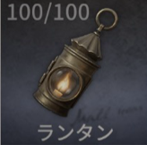 |
ランタン | 4000 | 手前の狭い範囲を照らす明かり。アイテム欄に入れておけばいつでも点けられる。光が味方にも届くのが虚言の眼には無い長所。序盤や墨痕が足りないうちの視界確保にどうぞ。 |
|
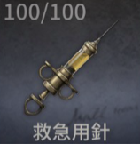 |
救急用針 | 4000 | 自分の体力を25%回復（メッセンジャーなら37%）。1個で4回使える。ソロだと回復手段はこれだけなので優先度はかなり高い。 |
|
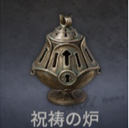 |
祝祷の炉 | 4000 | ダウン級の一撃を1回だけ肩代わりして消える保険アイテム。高難度のソロでは命綱になる。修理不可の使い切りなので使いどころに注意。 |
|
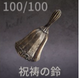 |
祝祷の鈴 | 6000 | 完全に倒れた味方を体力半分の状態で復活させる（2回使用可）。ソロではほぼ出番なし。アプデ後はバッグに入れておくだけで、持ち替えずそのまま救助できるようになった。 |
|
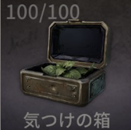 |
気つけの箱 | 8000 | 使うと警戒状態になり、移動が速くなってスタミナ消費も抑えられる（消費ゼロにも）。バフは使っていないと徐々に低下（80%以上で加速、50%以上で消費なし）。周回を回すならほぼ必須。こまめにオンオフして節約しよう。 |
|
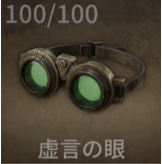 |
虚言の眼 | 25000 | 視界の中をまるごと明るく照らせる上位ランプ（専用アイコンでオン/オフ可）。ランタンの完全な上位互換で点灯時間も長い。ただし修理費が高めで、低難度だと赤字になりがち。 |
|
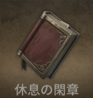 |
休息の閑章 | 50000 | その場から準備ホールへ戻れるアイテム（設置に約10秒かかり、途中で殴られると中断）。使い切りで値段は最高クラス。良い詞章を抱えている時や周回短縮に便利。アプデで、使用から数秒間は大半の異象のダメージを無効化する効果も付いた。 |
|
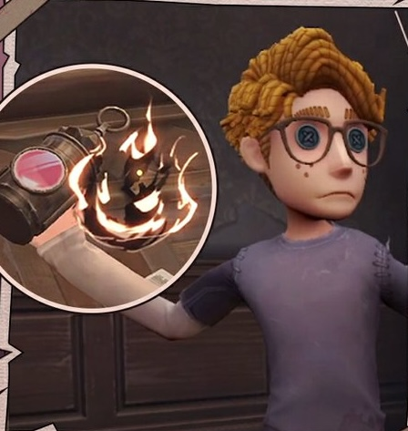 |
躍動する嘲弄NEW | - | 投げた位置に幻影を生成する新アイテム。幻影は挑発効果を持ち、倒されるか持続時間が切れるまで異象を引きつけ続ける。効果が終わると幻影が爆発し、範囲内の異象に減速効果を与える。囮を立てて安全に周回したい時に。バッグ1マスにつき最大2個まで持てます。 |

|
過去の反響NEW | - | 設置すると地面に球状のシールドを生成し、異象の侵入を防ぐ（中のプレイヤーは攻撃されない）。ただし中からシールド外の異象を攻撃することもできないので、あくまで籠城・やり過ごし用。 |
詞章（宝物）一覧
| レア | 名前 | タスク | 価値 | 備考 |
|---|---|---|---|---|
| SR | ドライフラワー | - | 300 | - |
| SR | 砂時計 | - | 600 | - |
| SR | 手紙の山 | 有 | 800 | - |
| SR | 古い物干しスタンド | - | 1200 | アイテム欄に入れると武器代わりに振り回せる |
| SR | キャンディーの瓶 | - | 1600 | - |
| SR | 割れた木の板 | - | 2000 | 不器用な盗賊が落とす。武器代わりに振り回せる |
| SR | 写真立て | 有 | 3000 | - |
| SR | 表札 | - | 4200 | 重い |
| SR | 古城装飾用の兜 | - | 5000 | とても重い |
| SSR | 孤光 | - | 5000 | 5個までスタック可能。武器の精製（スキン変更）に使う |
| SSR | ジュエリーボックス | - | 5000 | - |
| SSR | フルーツ皿 | - | 7000 | - |
| SSR | 金のスプーン | - | 8000 | - |
| SSR | アメジストの指輪 | - | 8000 | - |
| SSR | ミューズの秘密 | - | 10000 | オルゴール部屋の女神像から入手できる。宝物庫を開ける鍵も兼ねる |
| SSR | 幽霊人形 | 有 | 12000 | - |
| SSR | 幽霊水晶 | - | 14000 | - |
| SSR | 大きな油絵 | 有 | 15000 | - |
| UR | 銀製ナイチンゲールの燭台 | 有 | 20000 | - |
| UR | 銀製テルプシコラーの像 | 3個 | 40000 | - |
| UR | 黄金の巻物 | 有 | 100000 | - |
| UR | 赤珊瑚 | - | 150000 | - |
| UR | 金の杯 | - | 200000 | - |
| UR | 呪われたサファイア | - | ランダム (40万〜300万) |
鑑定によって価値が変わる。アイテム欄に入れて掲げると、周囲の敵の動きを鈍らせる |
| SR | 水筒NEW | - | - | - |
| SR | 破損したぬいぐるみNEW | - | - | - |
| SSR | 宝の地図NEW | - | - | - |
| SSR | 単眼鏡NEW | - | - | - |
| SSR | 銀の櫛NEW | - | - | - |
| SSR | 災いの贈り物NEW | - | - | - |
| UR | ティーポットNEW | - | - | - |
| UR | 舞踏会の仮面NEW | - | - | - |
| UR | 幽火の瓶NEW | - | - | 入手すると対戦中に「災厄の代わり身」へ変身でき、変身中は異象に見つかりにくくなる（ハンターモードではこの変身は不可） |
※へむへむが実際にプレイして確認できた範囲のまとめです。検証が進み次第、随時追記・修正していきます。
アップデート調整履歴
手記の加筆モードに入った戦闘調整・体験最適化のまとめ。長いので折りたたみにしています（見出しをタップで開閉）。
🌙 悪夢難易度＆ボス戦 実装NEW
- 【災いの女】に最高難易度「悪夢」を実装。地下室・特殊部屋【エンディング】が開放され、ボス「災いの女」戦が登場（現在サバイバーのみ）。
- 新職業「英雄」を追加（斬道／淬鋒／戦魂を持つ攻撃特化アタッカー）。
- 悪夢専用の新異象5体（拾遺の人形・読者の憶測・傾いた本棚・読者の審査・ボス災いの女）を追加。
- 新詞章9種（水筒・破損したぬいぐるみ・宝の地図・単眼鏡・銀の櫛・災いの贈り物・ティーポット・舞踏会の仮面・幽火の瓶）を追加。
- 新アイテム「過去の反響」を追加（異象の侵入を防ぐ球状シールドを設置）。
- 暗喩集録（異象／詞章／物語の暗喩）を新コレクション要素として追加。
- 【災いの追徴】システムを追加：探索で騒がせると追徴が最大4段階まで蓄積、災いの詠唱で脅威に。ボス撃破で解除。
👹 ハンターモード実装！
- ハンターモードが実装。配役サバイバーと詞章を奪い合う新モード。職業選択なしでキャラスキル＋補助スキルを装備して戦う（詳細は上の「ハンターモード」セクション参照）。
- 難易度は普通・困難。ソロ／2人チーム対応。第一弾は14ハンターが使用可能。
- 新詞章【別紙】を追加（サバイバーモードで入手）。これを消費してハンターモードの難易度を選ぶ。
- 解放条件は【災いの女・一】「血の夜の始まり」タスク完了。無料プレイは週7回（月曜0時リセット）。
🛠️ バランス調整（2026/7/30）
- 角笛の陰兵：同じ階層にいない他の異象を召集・強化できなくなった（別フロアの異象まで呼ばれる事故が減少）。
- 祝祷の炉：発動ロジックを調整し、メッセンジャーの飛箋よりも後に発動するようになった。
- 躍動する嘲弄：スタック数が追加され、携帯バッグ1マスにつき最大2個まで持てるように。
- 【災いの女-困難】の特殊-怠慢な守衛：出現数の上限を引き下げ。さらにソロで困難に入った場合は、マルチより出現数が少なくなるように調整。
🏮 盗墓筆記コラボ回の調整
- 叙事手法「独白叙事」「充溢叙事」を追加（詳細は上の叙事手法セクション参照）。
- UR詞章のすべてで手持ちが可能になる機能を追加。
- 【キャンセル操作】ボタン/キーを追加：長押し中やエイム中に押すと、その状態を終了できる。
- ダウン状態での救助要請定型文にハイライト表示を追加。
- 「燃える怨恨」使用時のキャンセル処理を最適化。
- 新しいマップ難易度を初めて解放した際のガイドを追加。
- ジャンプ操作を大幅改善：足場の端からジャンプする際の許容範囲を追加、連続ジャンプに短時間の入力バッファを追加、スティックを離した際の水平減速の度合いを調整（逆方向入力でも減速が発生）、ジャンプ中のスティック入力による速度加算量も調整。
- 手つなぎ機能を最適化：手つなぎ状態でしゃがめるようになり、細部表現を強化。手つなぎ中のプレイヤー間の優先取得保護時間は廃止。
- 連続して消極的なプレイを行った場合、一定時間ゲームへの参加が禁止される検知機能を追加。
- 【簡略叙事】の説明文を調整。
- モード内の音声処理を最適化し、一部で発生していた電子音を軽減。
🆕 前回アップデート（新要素・調整）
- 新アイテム「躍動する嘲弄」を追加：投げた位置に幻影を生成。幻影は挑発効果で異象を引きつけ続け、効果終了時に爆発して範囲内の異象を減速させる。
- 新異象「故紙の山」を追加：簡単・普通・困難の【災いの女】に出現し、隠された詞章までプレイヤーを導いてくれる。逆らわないのが賢明。
- マップ【災いの女】に新しいランダムレイアウトを追加。
- 「仲間を自動補充」に「仲間を補充-2人」モードを追加し、補充人数を柔軟に選べるように。
- 二級パスワード機能を追加：設定画面から有効にすると、手記の加筆内の資産を保護できる。
- アイテム/詞章のロック機能を追加：ロック中のものは売却できなくなる（誤売却防止）。
- 主人公：果敢スキルの使用中は落石の罠が発動せず、トラバサミにも挟まれなくなった。また果敢のダッシュ速度が、自身の恩恵効果および気つけの箱の影響を受けるように。
- ジャンプ中にスティックを離した後も慣性が残るようになり、助走ジャンプで足場に届かない事故が減少。障害物に密着した状態でのジャンプロジックも最適化され、密着した障害物に飛び乗れない状況が減った。
- 優先開放保護機能を追加：鍵で密室や宝物庫を開けたプレイヤーは、一定時間、鍵がかかった骨董木棚・精巧な木棚を優先的に開けられる。
- 容器を開けたり花瓶を割って生成された詞章にも、短時間の優先取得保護が付くように。
- 沈黙の紳士：失礼判定範囲に入ったプレイヤーへ、動作で合図を送るモーションを追加。返礼の内容と確率も調整され、返礼のバリエーションが豊富に。
- 怠慢な守衛が窓辺で目覚める際、専用の効果音が再生されるように。
- 【効率叙事】で異象を倒した際、贈り物がドロップした場合の演出効果を追加。
- 密室内で異象のスポーンに異常が発生する問題を修正（現在は正常に出現）。
- サバイバーが吐息の玉からもがいて落下するまでの時間が統一されていなかった問題を修正。
- ショップのTipsからアイテムを素早く倉庫へ移動、倉庫のTipsからアイテム/詞章を素早く売却できる機能を追加。売却画面にドロップダウン整理機能も追加。
- バッグと倉庫間のドラッグ時、アイテムが空いている倉庫スロットに優先配置されるように最適化。
- セット購入時の割引表示、段位のスコア計算ルールの説明文、負荷レベルタスクへのジャンプガイドを最適化。
- メールの件数が多すぎて推理を開始できない場合に、通知メッセージが出るように。
⚔️ 戦闘調整
- 手繋ぎ機能を追加：探索中、近くのプレイヤーに手繋ぎの招待を送れる。承諾すると招待側がリーダー・受けた側がメンバーとして追従。手繋ぎ中はスタミナ消費が低下＆回復が早くなり、人数が多いほど効果が強くなる。
- 操作カスタマイズで、手記の加筆モードのUIレイアウトを設定できるようになった。
- トラップ（罠）の発動判定範囲をわずかに縮小。
- トラップ（罠）の解除にかかる時間を短縮。トラップに掛かった仲間を助けて、より早く抜け出させられるようになった。
- 封緘の棚の一括提出の優先順位を変更し、ジュエリーボックスよりアークライトが優先して提出されるように。
- マップ【不運の娘】に新しいランダムレイアウトを追加。
- 推理開始時、バッグが空の場合はプレイヤーに通知されるように。
- 嘆きの玉：1つに憑依された後、短時間は2つ目の嘆きの玉に憑依されなくなった。
- 嘆きの玉2つに吊り上げられた後、脱出方法が自動離脱から手動での抵抗ボタンタップに変更され、最短の制御時間が短縮。
- 沈黙の紳士の攻撃範囲を下方修正。他の異象が沈黙の紳士に攻撃された場合は反撃するように。失礼判定の優先度も調整（紳士を攻撃した側が優先攻撃対象に）。
- 配達員がスキルを使う際のアイテム切り替えロジックを修正（手紙が放たれる前に切替で中断される不具合を修正）。
✨ 体験最適化
- 休息の閑章に新効果：使用した数秒後、大部分の異象によるダメージを無効化できるようになった。
- 祝祷の鈴：バッグにあれば、そのアイテムに切り替えなくても直接仲間を救助できるように。
- 武器スキン【旧日のクラシック】シリーズと華彩の辞章【呪われたサファイアのネックレス】の、マップ内での光源表現を最適化。
- 衣装選択画面のキャラフィルターに「全キャラ対象」オプションを追加。
- 骨董木棚の品質昇格時の操作感・エフェクト表現を最適化。
- 右上レーダーマップの表示範囲と、マップ展開時に霧が晴れる範囲が一致しない問題を修正。
- 友達同士でチームを組むと友好度を獲得できるように。
- 観戦UIを最適化。観戦中もピン（標点）を打てるようになり、定型文の内容も変更。
- トラップ解除時のキャラクターのモーション表現を最適化。
- 武器の照準がチャージ・攻撃命中・異象撃破をトリガーした際のフィードバック効果を最適化。
- 庇護者の杖の弱攻撃1段目の硬直後に再び弱攻撃を入力した際の連携効果を最適化。弱攻撃・溜め攻撃の硬直時における武器スキルとの連携も最適化。
- 装填済みの猟銃の自動リロード発動ロジックを最適化。
へむへむの一言
「手記の加筆」は対戦の駆け引きとは別軸の、探索＆コレクションを楽しむ新モード。詞章集め・異象回避・時間管理の3すくみが効いてて、ソロでもチームでもじっくり遊べます。まずは低難易度で異象の挙動と立ち回りに慣れて、ペット入手タスクを進めつつ、サファイアペンダント狙いで困難に挑戦――の流れがおすすめ。ハンターモードと「悪夢」難易度の実装で、さらに化けそうな予感です！
みんなのコメント